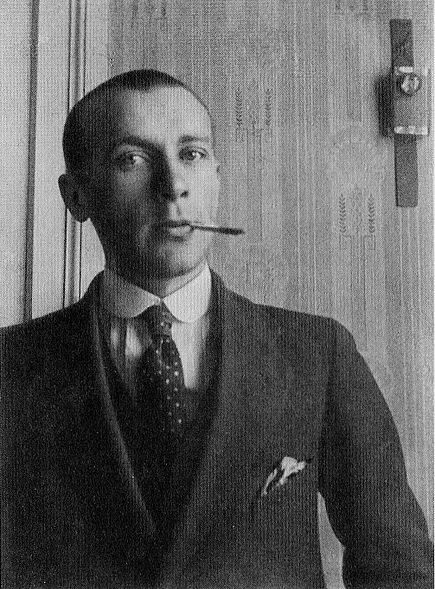

.png)
Моя улюблена книга
Звягінцев Ілля Олегович
Назва книги: Собаче серце
Автор: Михайло Булгаков
Жанр: сатирико-фантастичний роман
Рік першого видання: 1925/1968рр.
Короткий опис
Книга була написана в 1925 році, але не видана (через вплив Лева Каменєва). Згодом Булгаков написав п'єсу за мотивами твору і в 1926 році намагався поставити її в Московському художньому театрі. Тим не менше, спектакль було скасовано після того, як рукопис і копії були конфісковані таємною поліцією, або ОГПУ. Зрештою, Максим Горький втрутився і отримав рукопис[4]. Перша публікація в світі відбулася в 1968 році одночасно в журналі «Грані» (Франкфурт) та в журналі Алека Флегона «Студент» (Лондон). І лише в 1987 році книгу було видано в СРСР (6-й номер журналу «Знамя»), понад 60 років після її написання, але популярність у читачів роботі Булгакова дав Самвидав.
Про автора
 Михайло Опанасович Булгаков
(1891-1940)
Михайло Опанасович Булгаков (рос. Михаил Афанасьевич Булгаков; 3 (15) травня 1891, Київ — 10 березня 1940, Москва) — російський письменник, драматург, лібретист, лікар. Член Всеросійського союзу письменників (1923–1929) та спілки письменників СРСР (1934-1940). Серед найвизначніших книг Булгакова — романи «Майстер і Маргарита», «Біла гвардія» та «Дияволіада».
Булгаков був симпатиком білогвардійців, зневажливо ставився до української мови, мав українофобські погляди та був противником незалежності України і українського національного руху.
Учиться читать совершенно ни к чему, когда мясо и так пахнет за версту. Тем не менее (ежели вы проживаете в Москве, и хоть какие-нибудь мозги у вас в голове имеются), вы волей-неволей научитесь грамоте, притом безо всяких курсов. Из сорока тысяч московских псов разве уж какой-нибудь совершенный идиот не сумеет сложить из букв слово «колбаса».
Шарик начал учиться по цветам. Лишь только исполнилось ему четыре месяца, по всей Москве развесили зелёно-голубые вывески с надписью МСПО – мясная торговля. Повторяем, всё это ни к чему, потому что и так мясо слышно. И путаница раз произошла: равняясь по голубоватому едкому цвету, Шарик, обоняние которого зашиб бензинным дымом мотор, вкатил вместо мясной в магазин электрических принадлежностей братьев Голубизнер на Мясницкой улице. Там у братьев пёс отведал изолированной проволоки, она будет почище извозчичьего кнута. Этот знаменитый момент и следует считать началом Шариковского образования. Уже на тротуаре тут же Шарик начал соображать, что «голубой» не всегда означает «мясной» и, зажимая от жгучей боли хвост между задними лапами и воя, припомнил, что на всех мясных первой слева стоит золотая или рыжая раскоряка, похожая на санки.
Далее, пошло ещё успешней. «А» он выучил в «Главрыбе» на углу Моховой, потом и «б» – подбегать ему было удобнее с хвоста слова «рыба», потому что при начале слова стоял милиционер.
Изразцовые квадратики, облицовывавшие угловые места в Москве, всегда и неизбежно означали «сыр». Чёрный кран от самовара, возглавлявший слово, обозначал бывшего хозяина «Чичкина», горы голландского красного, зверей приказчиков, ненавидевших собак, опилки на полу и гнуснейший дурно пахнущий бакштейн.
- Если играли на гармошке, что было немногим лучше «Милой Аиды», и пахло сосисками, первые буквы на белых плакатах чрезвычайно удобно складывались в слово «Неприли…», что означало «неприличными словами не выражаться и на чай не давать». Здесь порою винтом закипали драки, людей били кулаком по морде, – иногда, в редких случаях, – салфетками или сапогами.
- Если в окнах висели несвежие окорока ветчины и лежали мандарины…
- Гау-гау… га… строномия. Если тёмные бутылки с плохой жидкостью…
- Ве-и-ви-на-а-вина… Елисеевы братья бывшие.
Был зимний вечер. Конец января. Предобеденное, предприёмное время. На притолоке у двери в приёмную висел белый лист бумаги, на коем рукою Филиппа Филипповича было написано: «Семечки есть в квартире запрещаю». Ф. Преображенский. И синим карандашом крупными, как пирожные, буквами рукой Борменталя: «Игра на музыкальных инструментах от пяти часов дня до семи часов утра воспрещается». Затем рукой Зины: «Когда вернётесь, скажите Филиппу Филипповичу: я не знаю – куда он ушёл. Фёдор говорил, что со Швондером». Рукой Преображенского: «Сто лет буду ждать стекольщика?» Рукой Дарьи Петровны (печатно): «Зина ушла в магазин, сказала приведёт».
В столовой было совершенно по-вечернему, благодаря лампе под шёлковым абажуром. Свет из буфета падал перебитый пополам зеркальные стёкла были заклеены косым крестом от одной фасетки до другой. Филипп Филиппович, склонившись над столом, погрузился в развёрнутый громадный лист газеты.
Молнии коверкали его лицо и сквозь зубы сыпались оборванные, куцые, воркующие слова. Он читал заметку:
«…выражались в гнилом буржуазном обществе) сын. Вот как развлекается наша псевдоучёная буржуазия. Семь комнат каждый умеет занимать до тех пор, пока блистающий меч правосудия не сверкнул над ним красным лучом. Шв…Р»
Очень настойчиво с залихватской ловкостью играли за двумя стенами на балалайке, и звуки хитрой вариации «Светит месяц» смешивались в голове Филиппа Филипповича со словами заметки в ненавистную кашу. Дочитав, он сухо плюнул через плечо и машинально запел сквозь зубы:
– Све-е-етит месяц… Све-е-етит месяц… Светит месяц… Тьфу, прицепилась, вот окаянная мелодия!
Он позвонил. Зинино лицо просунулось между полотнищами портьеры.
– Скажи ему, что пять часов, чтобы прекратил, и позови его сюда, пожалуйста.
Филипп Филиппович сидел у стола в кресле. Между пальцами левой руки торчал коричневый окурок сигары. У портьеры, прислонившись к притолоке, стоял, заложив ногу за ногу, человек маленького роста и несимпатичной наружности. Волосы у него на голове росли жёсткие, как бы кустами на выкорчеванном поле, а лицо покрывал небритый пух. Лоб поражал своей малой вышиной. Почти непосредственно над чёрными кисточками раскиданных бровей начиналась густая головная щётка.
Пиджак, прорванный под левой мышкой, был усеян соломой, полосатые брючки на правой коленке продраны, а на левой выпачканы лиловой краской.
На шее у человека был повязан ядовито – небесного цвета галстук с фальшивой рубиновой булавкой. Цвет этого галстука был настолько бросок, что время от времени, закрывая утомлённые глаза, Филипп Филиппович в полной тьме то на потолке, то на стене видел пылающий факел с голубым венцом. Открывая их, слеп вновь, так как с полу, разбрызгивая веера света, бросались в глаза лаковые штиблеты с белыми гетрами.